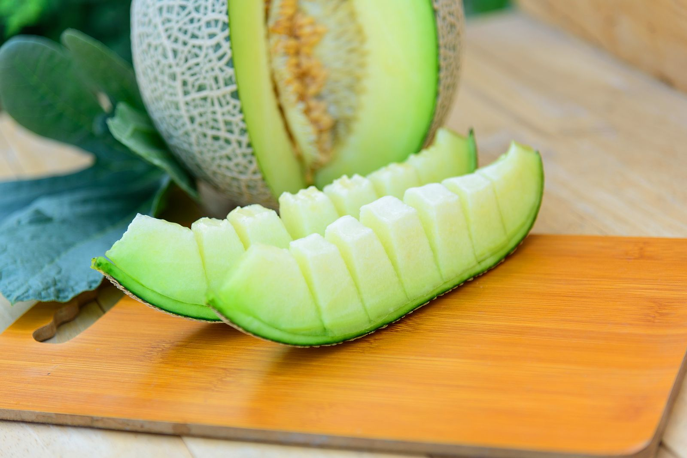
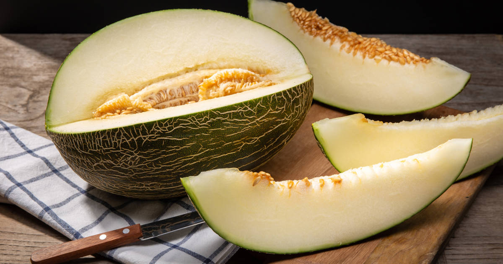

Volver al menu
Melón
Ingredientes
Paso a paso
Resultado final
Ingredientes
1 melón maduro (cantalupo o melón verde)
Paso a paso
Corta el melón por la mitad y retira las semillas. Luego, corta una porcion o tajada.

Sirvela en tu plato y disfruta.
Resultado final

Volver al inicio